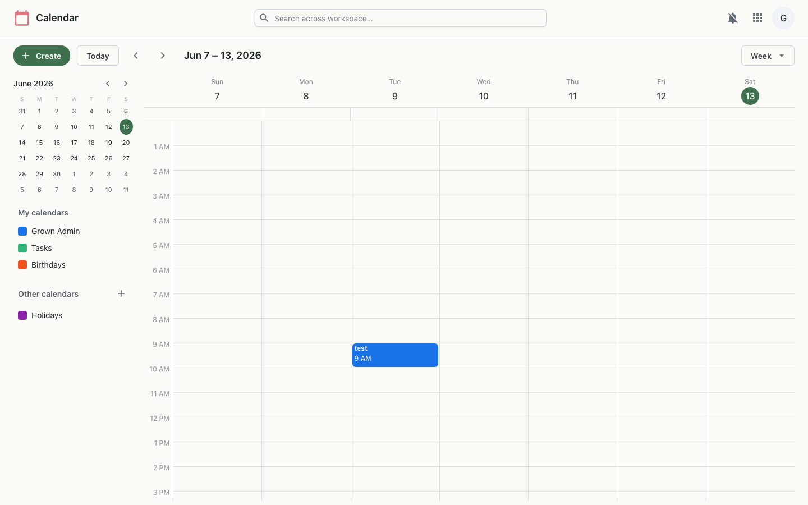
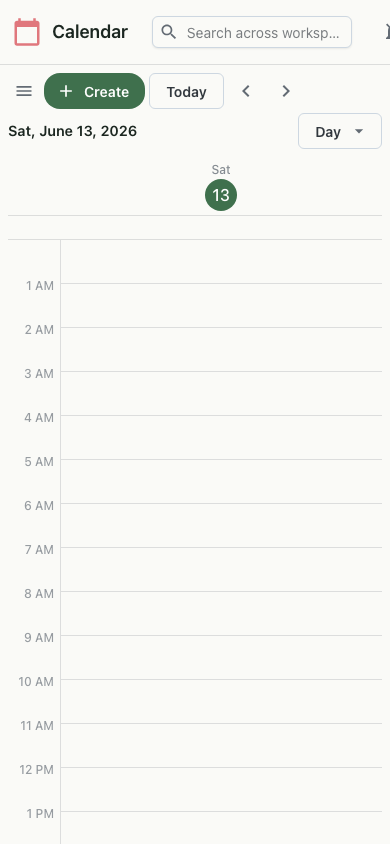

Events, recurrence, attendees and reminders — and attach a Meet video meeting to any event in a click.
Calendar gives you day, week and month views, a mini-month navigator and a stack of toggleable calendars — your own, plus Tasks, Birthdays and Holidays. Create events with recurrence, guests and reminders, and add a video meeting that everyone can join straight from the event.


Events are stored with start and end times, attendees, reminders and an optional recurrence rule (RRULE), which the calendar expands into individual occurrences across whichever view you're in. Attaching a meeting creates or links a Meet room tied to the event, so the Join link travels with the invite. Calendar visibility preferences are kept per user, and access uses the same workspace sign-on.